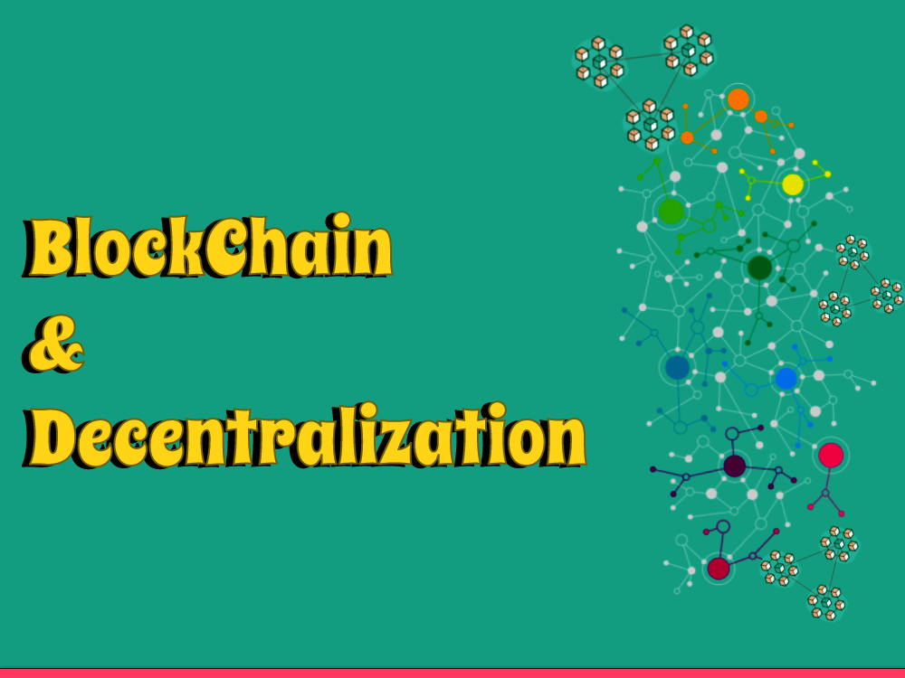

Blockchain innovation is frequently connected with decentralization, a term that alludes to the circulation of force and control away from a focal power or association. Decentralization is a crucial idea in blockchain innovation, as it considers the solid and straightforward sharing of information without the requirement for a focal delegate.
Decentralization can be a troublesome idea to comprehend, particularly for the people who are utilized to unified frameworks where a solitary element or association has command over an organization or information base. In this blog entry, we'll investigate what decentralization implies with regards to blockchain innovation and why it is so significant.
What is Decentralization?
Decentralization is an idea that alludes to the circulation of force or authority away from an essential issue of control. With regards to innovation, decentralization implies that a framework or organization is intended to work without a focal power controlling it. All things being equal, power is conveyed among every one of the clients or hubs in the organization, and choices are made through an agreement component.
Generally, concentrated frameworks have been the standard, where a solitary substance or association has command over a specific framework or organization. For instance, a concentrated financial framework is constrained by a solitary bank or gathering of banks, and they have the ability to direct the way that the framework works. Interestingly, a decentralized framework works through an organization of hubs, where every hub has a duplicate of the framework's information and is liable for confirming exchanges and adding them to the organization's record.
Decentralization offers a few benefits over concentrated frameworks. To start with, it expands straightforwardness and confidence in the framework, as all clients approach a similar data and can confirm the respectability of exchanges. Second, it wipes out the requirement for go-betweens, for example, banks or other monetary foundations, decreasing exchange costs and expanding productivity. At last, it makes the framework stronger to assaults or disappointments, as there is no main issue of disappointment that can cut down the whole framework.
Blockchain innovation is an illustration of a decentralized framework. In a blockchain network, all clients have a duplicate of the record, and exchanges are confirmed through an agreement component. Accordingly, blockchain networks are straightforward, secure, and proficient, and they can possibly upset numerous ventures that as of now depend on concentrated frameworks.
What is Blockchain Decentralization?
Blockchain innovation depends on decentralization. In a blockchain network, there is no focal power or delegate that controls the framework. All things being equal, the organization is comprised of hubs, which are PCs or servers that run the blockchain programming.
Every hub in the organization has a duplicate of the blockchain record, which contains a record of the relative multitude of exchanges that have occurred on the organization. At the point when another exchange is added to the blockchain, it is communicated to all hubs in the organization, and every hub checks the exchange utilizing complex cryptographic calculations.
When the exchange has been checked by an adequate number of hubs, it is added to the blockchain record, which is then refreshed on all hubs in the organization. This implies that each hub has an indistinguishable duplicate of the blockchain record, and no single hub have some control over the organization.
Why is Decentralization Significant in Blockchain?
Decentralization is a significant part of blockchain innovation because of multiple factors:
1: Expanded security
Decentralization makes blockchain networks safer by circulating control across an enormous number of hubs. This makes it more challenging for a solitary element to control or think twice about network, as any assault would require control of a huge piece of the hubs.
2: More prominent transparency
Decentralized blockchain networks are straightforward, as all members can see and confirm exchanges on the blockchain. This makes it simpler to track and follow exchanges, and lessens the gamble of deceitful or pernicious action.
3: Improved efficiency
Decentralized blockchain organizations can be more effective than incorporated frameworks, as they can work without mediators or focal specialists. This decreases the time and cost of exchanges and cooperations, and empowers more prominent mechanization and development.
4: Protection from censorship
Decentralized blockchain networks are impervious to oversight, as there is no focal power that have some control over or control the organization. This makes them helpful for applications like free discourse, content sharing, and open information.
5: Strengthening of individuals
Decentralization places more power in the possession of people, as they have more command over their own information and resources. This decreases the dependence on unified establishments and delegates, and empowers more noteworthy independence and self-assurance.
Overall, decentralization is a critical element of blockchain innovation that empowers more prominent security, straightforwardness, proficiency, protection from control, and strengthening of people. It can possibly change different ventures and applications, and empower a more decentralized and vote based society.
Is Blockchain truly Decentralized?
Blockchain innovation can be intended to be decentralized, yet not all blockchain networks are really decentralized. The degree of decentralization relies upon different variables, like the agreement system, the quantity of hubs in the organization, and the degree of control held by specific hubs or substances.
In a really decentralized blockchain network, all hubs have equivalent limitations, and choices are made through an agreement system. There is no focal power controlling the organization, and no single hub or gathering of hubs has more power or control than some other. Exchanges are checked and added to the blockchain through a cycle that is straightforward, secure, and impervious to control or control.
Nonetheless, some blockchain organizations may not be genuinely decentralized, as they might have few hubs that hold a lopsided measure of force or command over the organization. This can prompt centralization of control and possible weaknesses or dangers. Furthermore, some blockchain organizations might depend on confided in outsiders, for example, validators or prophets, which can likewise lessen the degree of decentralization.
In general, it is critical to assess each blockchain network on its own benefits to decide its degree of decentralization. While blockchain innovation can possibly be profoundly decentralized, it really depends on engineers and members in the organization to guarantee that it remains genuinely decentralized over the long haul.
What is an illustration of Decentralization in Blockchain?
An illustration of decentralization in blockchain is the Bitcoin organization. Bitcoin is a decentralized computerized money that works on a shared organization of hubs. Exchanges on the Bitcoin network are confirmed and added to the blockchain through an agreement component called confirmation of-work, in which hubs contend to tackle complex numerical issues to approve exchanges.
In the Bitcoin organization, there is no focal power controlling the organization, and all members have equivalent limitations. The organization is gotten through an enormous number of hubs, with no single hub having command over the organization. Exchanges are straightforward and recorded on the blockchain, making it hard to control or adulterate exchange records.
One more illustration of decentralization in blockchain is the Ethereum organization, which is a decentralized stage for building decentralized applications (dApps) and brilliant agreements. The Ethereum network works on a proof-of-work agreement component, however is currently changing to a proof-of-stake agreement system to further develop proficiency and decrease energy utilization.
In the Ethereum organization, brilliant agreements are executed on a decentralized virtual machine, and dApps can be fabricated and run on the organization without the requirement for delegates or focal specialists. This considers more prominent straightforwardness, security, and productivity in different ventures, for example, finance, store network the board, and medical care.
By and large, blockchain innovation empowers decentralization by circulating power and control across an organization of hubs, and taking into consideration straightforward, secure, and effective exchanges and connections without the requirement for go-betweens or focal specialists.
Which Blockchain is most Decentralized?
One of the most decentralized blockchains is Bitcoin, which has a huge and different organization of hubs and excavators conveyed all over the planet. Bitcoin works on a proof-of-work agreement instrument, which is viewed as a profoundly decentralized agreement system as it permits any member with adequate processing ability to add to the organization.
Other blockchain networks that are viewed as profoundly decentralized incorporate Ethereum, Litecoin, and Monero. These organizations have a huge and various organization of hubs and diggers, and work on verification of-work or confirmation of-stake agreement components that consider a more prominent level of decentralization.
Conclusion
Decentralization is a crucial idea in blockchain innovation. It alludes to the conveyance of force and control away from a focal power or association, and it considers the safe and straightforward sharing of information without the requirement for a focal delegate.
Decentralization is significant in blockchain on the grounds that it guarantees that the organization is secure, straightforward, and impervious to oversight and debasement. It additionally advances development and contest, which at last advantages the clients of the framework.
Thank you for reading, and stay tuned for more exciting insights into the world of blockchain and cryptocurrencies!